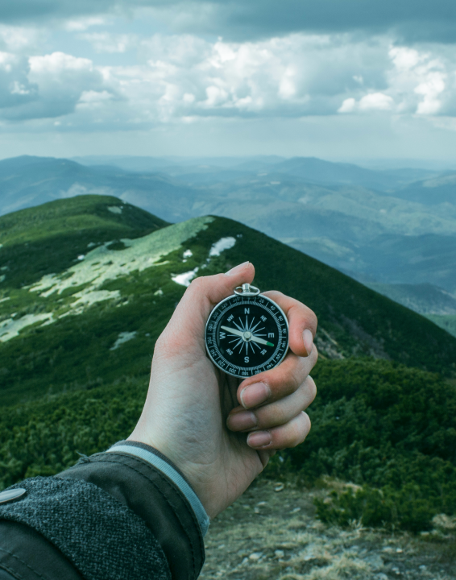

GEt Started
What level of hiker are you?
Determining what level of hiker you are can be an important tool when planning future hikes. This hiking
level guide will help you plan hikes according to different hike ratings set by various websites like All
Trails and Modern Hiker. What type of hiker are you – novice, moderate, advanced moderate, expert, or expert
backpacker?
read moreHiking Essentials
Picking the right Hiking Gear!
The nice thing about beginning hiking is that you don’t really need any special gear, you can probably get
away with things you already have.
Let’s start with clothing. A typical mistake hiking beginners make is wearing jeans and regular clothes,
which will get heavy and chafe wif they get sweaty or wet.
read more where you go is the key
Understand Your Map & Timing
To start, print out the hiking guide and map. If it’s raining, throw them in a Zip-Lock bag. Read over the
guide, study the map, and have a good idea of what to expect. I like to know what my next landmark is as I
hike. For example, I’ll read the guide and know that say, in a mile, I make a right turn at the junction..
read more 